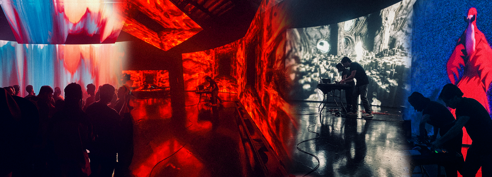

Diskokina Music Festival 2025
Real-Time AI, ComfyUI Gen
10/15/2025
Real-time AI-generated visuals for composer and sound artist Ina Chen's performance at Diskokina Music Festival in Los Angeles (April 2025). Diskokina is a club-centric celebration of East Asian diasporic electronic music and culture, featuring performances across multiple LA venues including Resident, Genever, and Pattern Bar.
For Ina Chen's "Lurker" performance, I deployed my custom ComfyUI workflow to generate live visuals that responded to her experimental electronic soundscapes. The workflow combined SDXL image generation models, Wan 2.2 video generation, and Ollama local LLMs to create dynamic visual sequences that evolved throughout the set. Using IP Adapter, ControlNet, and custom LoRA models, I targeted specific aesthetic qualities that complemented Ina's exploration of digital surveillance, online anonymity, and networked consciousness themes present in her work.
The system ran locally on high-VRAM hardware, allowing for image-to-video and frame-to-frame video generation in near-real-time. Ollama's Gemma3:4b model with image vision capabilities automated prompt generation and animation guidance, creating visual variations that maintained stylistic consistency while responding to the performance's sonic evolution. This approach allowed me to achieve the kind of aesthetic control typically associated with commercial services like Runway and Sora, but with the flexibility and responsiveness required for live performance contexts.
The challenge was adapting a workflow designed for pre-rendered content into a live performance tool that could generate compelling visuals with minimal latency. By pre-loading image sequences and optimizing the generation pipeline, I was able to create a semi-generative visual experience that felt both intentional and spontaneously responsive to Ina's experimental electronic compositions.
Example inputs and outputs are shown on the side.

▲ DESCRIPTION OF THE FUCKING IMAGE ▲

▲ DESCRIPTION OF THE FUCKING IMAGE ▲

▲ DESCRIPTION OF THE FUCKING IMAGE ▲